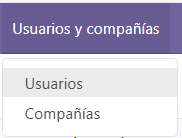
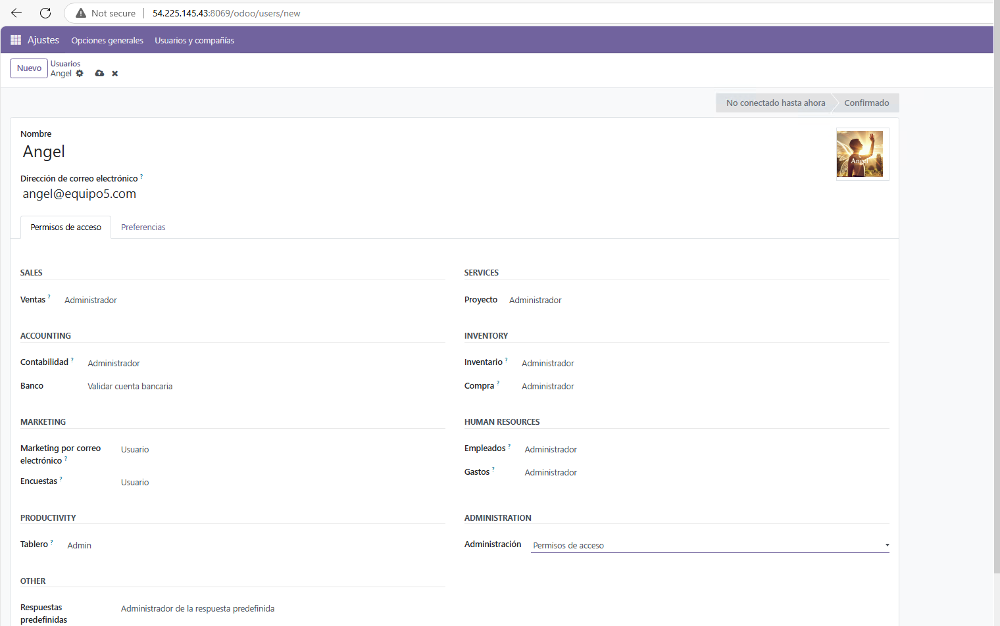
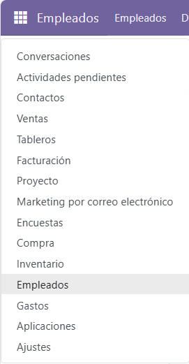
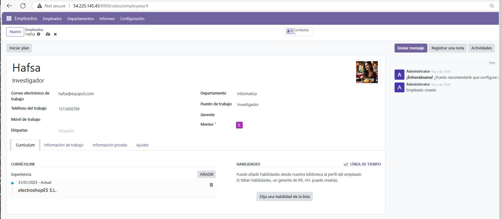
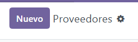

USUARIOS: ALTA DE USUARIOS DEL SISTEMA, EMPLEADOS (ALGUNOS, NO TODOS, PUEDEN SER USUARIOS DEL SISTEMA), CLIENTES Y PROVEEDORES.
Asignado a Miguel Gutiérrez Rodríguez.
Creación de usuarios
Para acceder a los usuarios entramos en Ajustes.

Y le damos a usuarios.

Seguido clicamos en nuevo.

Y creamos los usuarios que deseemos, en nuestro caso creamos a Ulises y Angel.


Este sería el resultado de su creación:

Creación de empleados
A la hora de crear empleados usaremos nuestros nombres y puestos de trabajo, (Ulises y Angel son usuarios y empleados),Angel sería el secretario, Hafsa investigadora, Ulises Implementador y Miguel sería el portavoz.
Clickamos en el apartado Empleados.

Y clickamos en nuevo empleado.

Crearemos a los empleados Hafsa y Miguel.


Este sería el resultado de la creación de empleados:

Creación de Clientes y Compañías
Para este apartado crearemos dos compañias que son clientes y dos individuos que pertenecen a dichas compañías (En nuestro caso hemos añadido 4 individuos).
Para acceder a los clientes y compañías clickamos en ventas

Le damos a nuevo cliente.
Seguido Creamos las dos compañías, en nuestro caso Las Palmas FC y XBOX (En la imagen se llama XVOX pero lo corregimos).


Como se ve tiene marcada la opción de compañia.
Y los individuos que le pertenecen a sus compañías:
Para Las palmas Alex Muñoz y Alvaro Valles:
Y para XBOX crearemos a Santiago Abascal y Pedro Sanchez:

Y como en el caso anterior estos tienen marcada la opcion individuo.
Esta sería la vista final de los clientes.

(Como se ve el nombre de XBOX está corregido).
Creación de proveedores
En este apartado crearemos dos proveedores, en nuestro caso nos proveen Nike y Riot Games.
Para acceder a los proveedores vamos al apartado Compra.
Y le damos a nuevo proveedor.

Creamos los proveedores Nike y Riot Games.

Este sería el resultado de la creación de proveedores.

Resultado final
Este seria el resultado final de toda la creación de usuarios,empleados, clientes y proveedores.